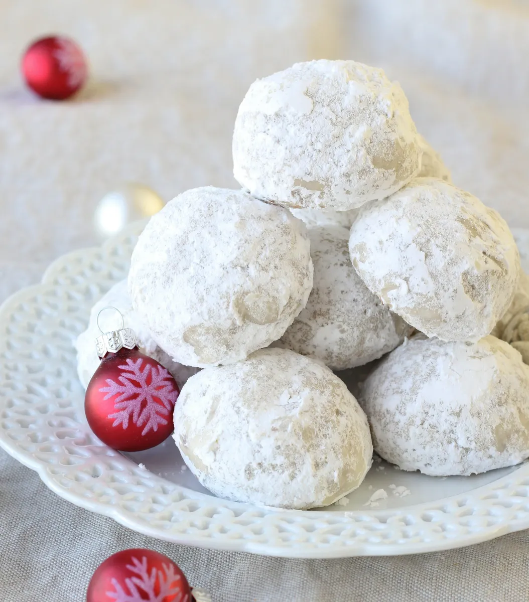

Home
Snowballs

Description:
With a rich, nutty flavor from finely chopped pecans, and a sweet,
powdery coating from confectioners' sugar, these tiny,
buttery treats are truly the most delicious melt-in-your-mouth morsels.
These snowball cookies are simply irresistible. It's sure to become a go-to during the holiday season,
but you'll want to make this snowball cookie recipe all year long.
Ingredients:
- ⅓ cup powdered sugar, or more as needed
- 1 cup unsalted butter, softened
- ½ cup powdered sugar
- 1 teaspoon vanilla extract
- 2 ¼ cups all-purpose flour
- 1 cup very finely chopped pecans
- ¼ teaspoon salt
Steps:
- Preheat the oven to 350 degrees F (175 degrees C).
Place 1/2 cup powdered sugar in a bowl; set aside.
- Beat butter, remaining 1/2 cup powdered sugar,
and vanilla with an electric mixer in a large bowl until smooth.
Gradually mix in flour, pecans, and salt until completely incorporated.
Roll dough into walnut-sized balls and place 2 inches apart onto ungreased baking sheets.
- Bake in the preheated oven until bottoms are light golden brown but tops are still pale,
12 to 15 minutes. (Try not to let cookies get too brown:
it's better to undercook them than to overcook them.)
- Remove cookies from the oven and let sit on the baking
sheets briefly before removing to wire racks.
- Roll hot cookies in the reserved powdered sugar to coat,
then return to the wire racks to cool. Once cooled,
roll cookies in the powdered sugar once more.